No resources match that search.

Hack The Box BlackSky
Cloud security specialist labs for AWS, Azure, and GCP with realistic enterprise infrastructure. Earn Cloud Security Specialist certifications.

Cybr Free AWS Labs
Free 1-click deploy hands-on AWS security labs for building practical skills risk-free.

Digital Cloud Training Challenge Labs
1000+ scenario-based labs for AWS and Azure with automatic validation, scoring, and multiple difficulty levels.

AWS Well-Architected Security Labs
Hands-on labs and documentation for building secure workloads using AWS Well-Architected Framework.

Awesome CloudSec Labs
Curated collection of free cloud native security learning labs including CTF, workshops, and research labs.

Immersive Labs
Cyber drills, labs, and reporting mapped to MITRE ATT&CK, NICE, and NIST frameworks for measuring team readiness.

SecureFlag GCP Labs
Hands-on GCP security training covering IAM, network security, encryption, and API security.

Pwned Labs
Premium Azure and AWS security labs with assume-breach scenarios and professional certifications.

TryHackMe
Gamified cybersecurity training with cloud security learning paths and 800+ labs.

A Cloud Guru
Comprehensive cloud training platform with AWS, Azure, and GCP security courses.

CBT Nuggets
IT training platform with cloud security certification prep courses.

Udemy Courses
Wide selection of cloud security courses from various instructors.

Amazon EKS Workshop
Hands-on workshop for learning Amazon EKS including security best practices.

The Homelab Almanac
Comprehensive guide for building your own security home lab with infrastructure-as-code examples and practical setups.

Cybersecurity Expert Roadmap
Structured learning path for cloud security expertise with recommended skills, tools, and resources for different career levels.

SLAW: Security Lab a Week
Hands-on cloud security labs from Securosis with 15-30 minute exercises focusing on practical cloud security scenarios.

Microsoft Learn - Azure Security
Free official Microsoft training with browser-based sandboxes for hands-on Azure security practice. Maps directly to SC-500 and SC-100 certification paths.

Google Cloud Skills Boost - Security
Hands-on GCP security learning path with temporary cloud environments provided. Covers IAM, VPC Service Controls, and Security Command Center.

AttackIQ Academy
Free training on threat-informed defense, MITRE ATT&CK, purple teaming, and adversary emulation. CPE credits awarded for completion.

Antisyphon Training
Pay-what-you-can security training from John Strand and Black Hills InfoSec. Live virtual classes with practitioner instructors and active Discord support.

Hack The Box Academy
Structured courses with integrated labs and job-role paths. Earn industry-recognized certifications like CBBH and CPTS through hands-on practice.

AWS Skill Builder
AWS's official training portal with free courses, security learning plans, and sandboxed hands-on labs. Curated by AWS engineers and aligned to certification objectives.

Killercoda
Browser-based interactive Kubernetes and cloud-native scenarios from the CKS simulator team. Free, no signup for most labs - popular for CKS exam prep.

AWS Workshops Catalog
Official self-paced workshops by AWS architects covering IAM, GuardDuty, Security Hub, Detective, and incident response with deploy scripts and walkthroughs.

Google Cloud Skills Boost
Google's official labs platform (formerly Qwiklabs) with self-paced GCP environments. Security paths cover IAM, VPC Service Controls, BeyondCorp, and PCSE cert prep.

Cloud Resume Challenge
Forrest Brazeal's project-based challenge spanning IaC, CI/CD, serverless, and identity. Builds a real portfolio piece that exercises end-to-end cloud security thinking.

DetectionLab
Chris Long's curated Windows detection-engineering lab with AD, ELK, Velociraptor, and Splunk pre-wired. The reference project for tuning Sigma rules and tracing attacks.

RangeForce Community Edition
Browser-based hands-on training with cloud, container, and SOC modules. Free community tier runs in sandboxed environments with no setup.

CyberDefenders
Blue-team labs covering DFIR, incident response, and cloud log analysis. Free tier covers most challenges; paid tier adds structured career paths.

Iximiuz Labs
Free interactive Linux, container, and Kubernetes labs by Ivan Velichko. Each lab gives you a real terminal environment with guided exercises.

KodeKloud
Browser-based labs and courses for Kubernetes, Docker, Terraform, and DevSecOps. Popular CKA/CKAD/CKS prep with hands-on exam-style practice tests.

AWS Cloud Quest
AWS's free 3D role-playing game that teaches services through guided quests, including a Security path covering IAM, GuardDuty, KMS, and incident response.

Google Cybersecurity Certificate
Google's eight-course Coursera certificate covering frameworks, networks, Linux/SQL, Python automation, and incident response. Free to audit, paid for the credential.

Isovalent Labs
Free hosted labs covering Cilium, eBPF, Kubernetes network policy, and Tetragon runtime security. Runs in a sandbox - no cluster required.

HashiCorp Developer Tutorials
Official HashiCorp tutorials for Terraform, Vault, Consul, and Boundary - including secrets rotation, dynamic credentials, and policy-as-code.

Snyk Learn
Free interactive lessons on appsec, IaC, container, and supply chain security with browser-based exploit-then-patch sandboxes.

TCM Security Academy
Affordable practical pentesting and Active Directory courses from The Cyber Mentor. Pairs with the PNPT certification.

INE
Hands-on labs and learning paths across cloud, security, and networking. Home of the eJPT and eCPPT pentest certifications.
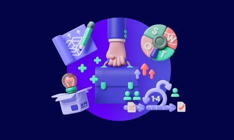
AppSecEngineer
Hands-on cloud-native and DevSecOps training spanning AWS, Azure, GCP, Kubernetes, and secure coding. Browser-based labs aligned to security engineer roles.
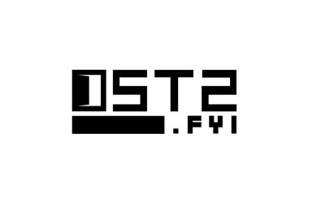
OpenSecurityTraining2
Free university-grade courses on x86/ARM internals, reverse engineering, and vulnerability research. Rounds out the depth missing from cloud-only curricula.
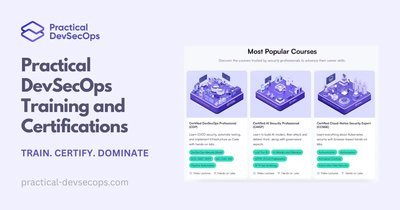
Practical DevSecOps
Browser-lab training and certifications for CI/CD security, container and Kubernetes hardening, IaC scanning, and SBOM workflows.
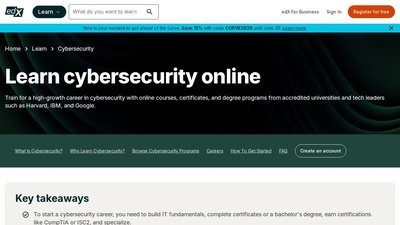
edX Cybersecurity
University-led cybersecurity courses from MIT, Harvard, Berkeley, and IBM. Free to audit; paid for verified certificates and graded labs.

Cloud Academy
Subscription multi-cloud training with sandboxed AWS, Azure, and GCP labs plus structured security learning paths and skill assessments.
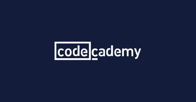
Codecademy Cybersecurity Path
Interactive in-browser learning path covering security fundamentals, network security, OWASP Top 10, and basic offensive techniques. Beginner-friendly with no setup.
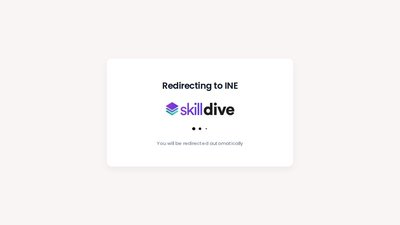
Pentester Academy
Subscription training with AWS, Azure, GCP, Active Directory, and Kubernetes attack labs. Home of the CRTP and CRTE certification series.
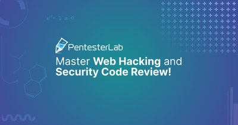
PentesterLab
Web and API security training built from real CVEs. Badge-based paths let you drill JWT, S3, deserialization, and other bug classes.
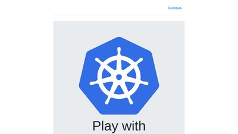
Play with Kubernetes
Free browser-based multi-node Kubernetes playground - great for practicing RBAC, kube-bench, and admission-controller hardening with no cloud account.
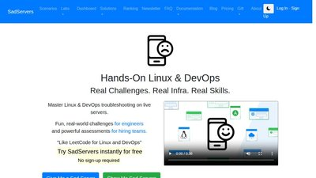
SadServers
Hands-on Linux troubleshooting challenges in real disposable servers - diagnose and fix broken systems to sharpen the fundamentals behind cloud work.
Google Cloud Skills Boost
Official Google hands-on labs in temporary live GCP environments, including security-focused learning paths and skill badges.
Microsoft Learn
Free official learning paths and hands-on sandboxes for Azure security, identity, Defender, and Sentinel.
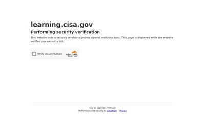
CISA Learning
Free federal cybersecurity training portal from CISA covering cloud security, incident response, and risk management.
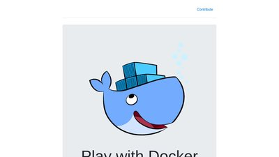
Play with Docker
Free in-browser Docker playground with disposable hosts and guided labs for learning container fundamentals.
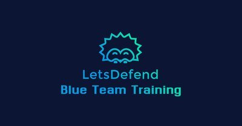
LetsDefend
Browser-based SOC simulation for blue-team practice, investigating real alerts across phishing, malware analysis, and incident response.
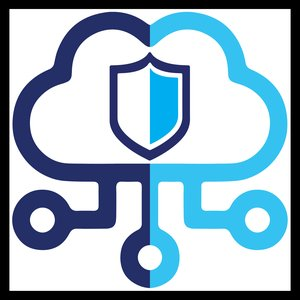
Blue Team Labs Online
Gamified defensive labs and investigations using real forensic artifacts across DFIR, incident response, and threat hunting.
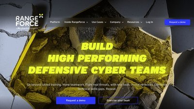
RangeForce
Cloud cyber range with hands-on detection and response exercises using real security tools; free community edition available.
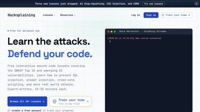
Hacksplaining
Interactive secure-coding lessons that walk developers through exploiting and then fixing common web vulnerabilities.
YesWeHack Dojo
Free, bite-sized web-hacking exercises from a major bug-bounty platform, focused on real-world vulnerability classes.

Security Blue Team
Hands-on blue-team training in DFIR, threat intel, and SIEM analysis; home of the practical BTL1 and BTL2 certifications.
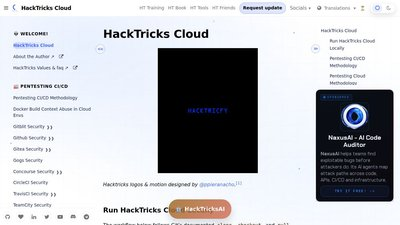
HackTricks Cloud
Community knowledge base of cloud attack techniques across AWS, GCP, Azure, and Kubernetes - organized by service and privilege-escalation path.
Tutorials Dojo
Practice exams, cheat sheets, and hands-on cloud labs for AWS, Azure, and GCP certifications - including the security tracks.
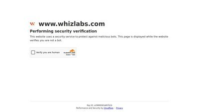
Whizlabs
Hands-on cloud labs, sandboxes, and practice tests mapped to AWS, Azure, and GCP certification objectives.
Wiz CloudSec Academy
Free explainer library covering cloud security fundamentals - CSPM, CNAPP, CIEM, and Kubernetes - with plain-language guides and diagrams.
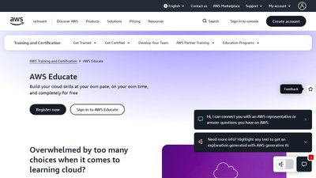
AWS Educate
Free self-paced AWS courses and hands-on labs open to anyone, covering core services and security fundamentals with digital badges.
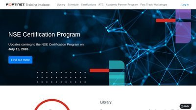
Fortinet Training Institute
Free self-paced security training from fundamentals to advanced, covering cloud security, secure networking, and zero trust, with CPE credit.
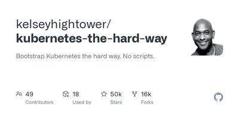
Kubernetes the Hard Way
Kelsey Hightower's hands-on guide to bootstrapping a Kubernetes cluster from scratch - certificates, etcd, and control plane by hand - to learn how it really works.
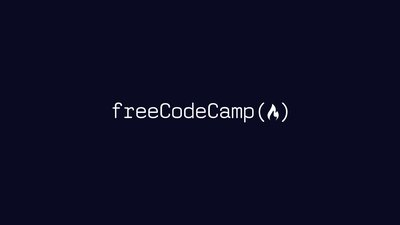
freeCodeCamp
Free nonprofit platform with a project-based Information Security certification plus networking and Python courses. No paywall.
Hoppers Roppers Academy
Free, structured beginner curriculum covering computing, networking, and Linux fundamentals before specialising into security.
Per Scholas
Tuition-free, full-time tech training. The 15-week AWS re/Start track covers IAM, CloudTrail, and VPCs, and prepares you for the AWS Certified Cloud Practitioner exam.

SEED Labs
University-grade hands-on labs covering software, network, web, and crypto security with ready-made VMs and step-by-step manuals.

MITRE ATT&CK Defender (MAD)
Threat-informed defense training and certification built on the ATT&CK framework by MITRE Engenuity, with hands-on detection and emulation exercises.

Linux Journey
Free, structured lessons on Linux fundamentals - shell, permissions, processes, and networking - for security practitioners shoring up the basics.

Udacity
Project-based Nanodegree programs in cybersecurity, cloud, and DevOps with graded, reviewed hands-on projects.

Cisco Networking Academy
Cisco's free courses in networking and cybersecurity with hands-on simulations, covering the fundamentals behind cloud security.

LinkedIn Learning
Video learning paths in cloud security, AWS, Azure, and Kubernetes taught by practitioners, tied to your LinkedIn profile.

Educative
Text-based interactive courses with runnable in-browser environments spanning cloud security, Kubernetes, and system design.

MIT OpenCourseWare
Free MIT course materials, including graduate-level computer systems security lectures, assignments, and exams.

CS50 Cybersecurity
Harvard's free introduction to cybersecurity covering authentication, encryption, and common attacks with hands-on problem sets.